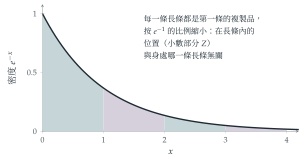

STEP III 2021，第 11 題
繼續之前，請先閱讀題目（原題為英文）。題目載於 OCR 提供下載的 2021 年 STEP 試卷（zip 檔案）內的 STEP III 試卷： www.ocr.org.uk/Images/696588-2021-past-papers.zip
引子
一顆放射性原子在實驗室裏待了一百萬年，一直沒有衰變。它是否「快要」衰變了？不是：它在下一秒內衰變的機會，與一顆剛剛產生的原子完全相同。放射性原子不會老化。直至衰變為止的等候時間服從指數分佈（exponential distribution），而這個分佈的決定性特徵，就是它沒有記憶。
這道題以一種令人印象深刻的形式展示了這種無記憶性（memorylessness）。把一個指數等候時間拆成整數個單位和小數部分。原來這兩部分是獨立（independent）的：知道你等了多少個完整的小時，對於分鐘數毫無提示。這道題還會在練習中解釋，為甚麼你等巴士的時間，可以顯得比兩班巴士之間的間隔還要長。
動筆之前
對於 \(x \geq 0\)，\(\mathrm{P}(X > x)\) 是甚麼？\(\mathrm{P}(X > s + t \mid X > s)\) 又是甚麼？
\(\mathrm{P}(X > x) = \int_x^\infty\lambda e^{-\lambda u}\,\mathrm{d}u = e^{-\lambda x}\)。於是 \(\mathrm{P}(X > s + t \mid X > s) = \frac{e^{-\lambda(s + t)}}{e^{-\lambda s}} = e^{-\lambda t} = \mathrm{P}(X > t)\)：已經等了 \(s\) 之後，餘下的等候時間與從頭開始等候的分佈相同。這就是無記憶性質（memoryless property）。
逐步解題
階段 1 整數部分
\(Y = n\) 當且僅當 \(n \leq X < n + 1\)： \[\mathrm{P}(Y = n) = e^{-\lambda n} - e^{-\lambda(n + 1)} = (1 - e^{-\lambda})e^{-n\lambda}. \qed\] 所以 \(Y\) 服從幾何分佈（geometric distribution）：每一個完整單位都以概率 \(e^{-\lambda}\) 被「捱過」。
階段 2 小數部分
\(Z < z\) 表示 \(X\) 落在其中一個區間 \([n, n + z)\) 內。把這些區間的概率加起來。
\[\mathrm{P}(Z < z) = \sum_{n \geq 0}\bigl(e^{-\lambda n} - e^{-\lambda(n + z)}\bigr) = (1 - e^{-\lambda z})\sum_{n \geq 0}e^{-\lambda n} = \frac{1 - e^{-\lambda z}}{1 - e^{-\lambda}}. \qed\]
階段 3 \(Z\) 的平均值
對於取值於 \([0, 1]\) 的隨機變量（random variable），\(\mathrm{E}(Z) = \int_0^1\mathrm{P}(Z > z)\,\mathrm{d}z\)。運用這條公式。
設 \(c = 1 - e^{-\lambda}\)，則 \(\mathrm{P}(Z > z) = 1 - \frac{1 - e^{-\lambda z}}{c}\)，所以 \[\mathrm{E}(Z) = 1 - \frac1c\Bigl(1 - \frac{1 - e^{-\lambda}}{\lambda}\Bigr) = 1 - \frac1c + \frac1\lambda = \frac1\lambda - \frac{e^{-\lambda}}{1 - e^{-\lambda}} = \frac1\lambda - \frac{1}{e^\lambda - 1}. \qed\] （當 \(\lambda\) 很小，即等候時間很長時，這個值趨向 \(\frac12\)：小數部分幾乎是均勻分佈的。當 \(\lambda\) 很大時，它接近 \(\frac1\lambda\)，因為 \(X\) 幾乎總是小於 \(1\)。）
階段 4 獨立性
\[\mathrm{P}(Y = n, z_1 < Z < z_2) = \mathrm{P}(n + z_1 < X < n + z_2) = e^{-\lambda n}\bigl(e^{-\lambda z_1} - e^{-\lambda z_2}\bigr).\]
利用第 (i) 及第 (ii) 部分，與 \(\mathrm{P}(Y = n)\,\mathrm{P}(z_1 < Z < z_2)\) 作比較。
由 (i) 及 (ii)，\(\mathrm{P}(Y = n)\mathrm{P}(z_1 < Z < z_2) = (1 - e^{-\lambda})e^{-n\lambda}\cdot\frac{e^{-\lambda z_1} - e^{-\lambda z_2}}{1 - e^{-\lambda}}\)，兩者相同。所以 \(Y\) 與 \(Z\) 獨立。■

回顧
逐段求和。\(Z\) 的分佈和聯合概率（joint probability），都是把各區間 \([n, n + 1)\) 上的概率相加而得的。
尾部公式。\(\mathrm{E}(Z) = \int\mathrm{P}(Z > z)\,\mathrm{d}z\) 讓我們不必求出密度。
能夠分解即是獨立。聯合概率分拆成一個 \(n\) 的函數乘以一個 \(z_1\)、\(z_2\) 的函數。
背後的數學
指數分佈為何特別
\(Y\) 與 \(Z\) 的獨立性直接來自 \(e^{-\lambda(n + z)} = e^{-\lambda n}e^{-\lambda z}\)，而這正是無記憶性質的另一副面貌。事實上，指數分佈是唯一沒有記憶的連續分佈：若對所有 \(s, t \geq 0\) 都有 \(\mathrm{P}(X > s + t) = \mathrm{P}(X > s)\mathrm{P}(X > t)\)，則 \(g(t) = \ln\mathrm{P}(X > t)\) 滿足 \(g(s + t) = g(s) + g(t)\)，而（對於單調（monotonic）的 \(g\)）這就迫使 \(g(t) = -\lambda t\)。正因如此，指數分佈可用來描述那些「隨機」發生、沒有任何累積過程的事件的等候時間：放射性衰變、顧客的到達、不會損耗的電子元件的故障。
最小值與等候時間悖論
若 \(X_1\) 與 \(X_2\) 是獨立的指數隨機變量，率分別為 \(\lambda_1\) 和 \(\lambda_2\)，則 \(\mathrm{P}(\min > x) = e^{-\lambda_1x}e^{-\lambda_2x}\)，所以最小值服從率為 \(\lambda_1 + \lambda_2\) 的指數分佈。等候兩個獨立隨機事件中最先發生的一個，就如同以合併後的率等候單一事件（STEP III 2002 Q13，見練習）。無記憶性也解釋了等候時間悖論（waiting-time paradox）：若巴士隨機到站，平均間隔為 \(10\) 分鐘，則一位在隨機時刻到達的乘客平均要等 \(10\) 分鐘，而不是 \(5\) 分鐘，因為餘下的等候時間是無記憶的；而乘客到達時所處的那個間隔，平均長達 \(20\) 分鐘，因為較長的間隔更容易被碰上。
1910 年，歐內斯特·盧瑟福與漢斯·蓋革（Hans Geiger）以 \(7.5\) 秒為一個時段，數算一個放射源所放出的阿爾法粒子（alpha particles），發現這些計數服從泊松分佈（Poisson distribution）；數學家 Harry Bateman 證明了，只要各次放射以恆定的率獨立發生，結果就理應如此。這樣一來，相鄰兩次放射之間的時間便服從指數分佈。泊松過程，即間隔服從指數分佈的一連串事件，如今已成為描述時間上隨機性的基本模型，應用於電話通話、保險索償以及神經元的放電；下一節 第 12.19 節 會把它推廣到空間。
思維技巧
若兩個隨機變量的聯合概率可分解為其中一個變量的函數乘以另一個變量的函數，則這兩個隨機變量獨立。
在大學裏，聯合密度（joint density）能否分解是檢驗獨立性的標準方法，你亦會藉此在多變量問題中辨認出獨立的分量，例如 第 12.22 節 中服從正態分佈（normal distribution）的點的半徑與角度。
延伸練習
兩條巴士路線。試做 STEP III 2002，第 13 題。這道題利用兩個指數隨機變量的最小值，求出等候下一班巴士的時間。
離散的無記憶性。證明幾何分佈是無記憶的：\(\mathrm{P}(Y \geq m + n \mid Y \geq m) = \mathrm{P}(Y \geq n)\)。
等候時間悖論。巴士的到站是一個率為 \(\lambda\) 的泊松過程。證明包含某固定時刻 \(t\)（\(t\) 很大）的那個間隔，其期望長度為 \(\frac2\lambda\)，即平均間隔的兩倍。
\(Z\) 的密度。求 \(Z\) 的概率密度（probability density），並就 \(\lambda = 1\) 和 \(\lambda = 5\) 繪出其草圖。
延伸閱讀
Geoffrey Grimmett & Dominic Welsh, Probability: An Introduction（Oxford University Press），論及指數分佈與泊松過程。
Sheldon Ross, Introduction to Probability Models（Academic Press）。指數分佈、泊松過程與排隊。
David Spiegelhalter, The Art of Uncertainty（Pelican）。日常生活中的隨機性與等候。